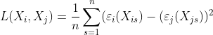

Methods
Problem Set Up
filler words
Coupled Autoencoder
To accomplish our task, we will be using a coupled autoencoder model, which utilizes a type of neural network called an autoencoder. An autoencoder consists of three, necessary layers: the encoder layer, the code (latent space), and the decoder layers. Encoding layers are often put between the input and the code, and decoding layers are put between the latent space and the output layers. As the data passes between layers in the encoding portion of the autoencoder, it undergoes dimensionality reduction, which will help us denoise the data to find the components of it that encode the most information. The decoding layers will then take the compressed version of the data in the code and reconstruct it layer by layer as the data travels back to the output layer. A single autoencoder model framework is shown below.

Autoencoders can be connected to share the same latent space, such that they can learn to reconstruct one set of input data from another. We can perform this linkage with our coupled autoencoder, and we can see that both the data for GEX and ADT are aligned. Thus a coupled autoencoder model will be able to predict ADT data from GEX and GEX data from ADT. In order to improve the coupled autoencoder’s predictions, we will need to optimize the architecture as well as add supervision in both the latent space and the outputs.
This figure is a coupled autoencoder framework. It contains 2 encoders which reduce the dimensions of both input modalities down to the latent space which then makes it possible to perform cross modality prediction through its 2 decoder layers.
To add supervision in the latent space, we implemented two loss functions. The first loss function is pairwise distance loss functions. We define the pairwise loss function as:

We denote the encoder and decoder layers of the model by Ei and Ej, Di and Dj for GEX and ADT respectively. In addition, we denote the original data as Xi,Xj for GEX and ADT respectively. Z(X) calculates the p-norm distance between each point in the data and is defined as the following, where X is defined as the given matrix for the data. Z(X) is defined as:

While we cannot directly calculate the loss of a cell in the input space and its representation in the embedded space, due to the dimensionality reduction aspect of the autoencoder, we instead attempt to preserve the distance between given cells in the input space and those corresponding cells in the latent space as a workaround. This is the goal of our pairwise distance, where we calculate the summation of all of the differences between the pairwise distance of two given cells in the input space and in the embedding. This loss function is then normalized by how many pairwise distance calculations were made in the summation. The goal of our Pairwise Distance loss is to preserve the distance among the points between the original space, and the embedding in the lower dimensions after the encoding, which would result in the same clusters of cells inherently present in the input space to also be maintained in the embedded space.
Our next loss inside the latent space is Alignment Loss. Since the latent space is shared between the two modalities, we want the embeddings in the latent space to be the same in terms of both position and general clustering patterns. Thus, this loss will be calculated as the mean squared error between the two embeddings, i.e. the mean squared error between the embedding of the GEX data and the ADT data. It is defined as:
To add supervision in the model's outputs, we want to calculate the losses of the same modality reconstruction. The loss for same modality reconstruction is defined as:

We also want the model to calculate losses for cross modality prediction. This is defined as:
Preprocessing of GEX data
The GEX data contains points where certain columns have extremely high values. In the interest of clustering the data by their cell types, those cells can be interpreted as having much further distances from other clusters of cells. This causes the encoder of the model to not accurately cluster up the cell types in lower dimensions because these distant points are dominating. An option to alleviate this issue could be to remove outliers, or to set a maximum value for these distances, but these extreme values may be important to the identity of those cells. Our solution is to log transform and then normalize the data. This allows the data to reduce the large distances from these far points while preserving the distribution of the points in order to be able to cluster up the different cell types accurately in lower dimensions.
Modifications to Coupled Autoencoder
Because of the log and normalization terms we must modify the coupled autoencoder framework in order to undo the log and normalization. To undo the log, we must apply an inverse log function in order to bring the data back to its original form.
To undo the normalization however takes more work. Predicting the GEX from ADT raises some challenges. To undo normalization, it requires a scale factor from the original data. Predicting GEX from ADT data does not give the model the scale factors it requires to undo the normalization as it is not the original GEX data. Thus we must train the coupled autoencoder model to learn this scale factor by adding an extra dimension to the final output of the model. With GEX data being in R^D, the final output of the model prediction will be in R^D+1 (will fix format on the final website). The D+1 dimension will then be extracted and multiplied to the first D dimension in order to output the original data. Thus we allow the model to learn the scale factor on its own to bring its predicted GEX data back to its original form.